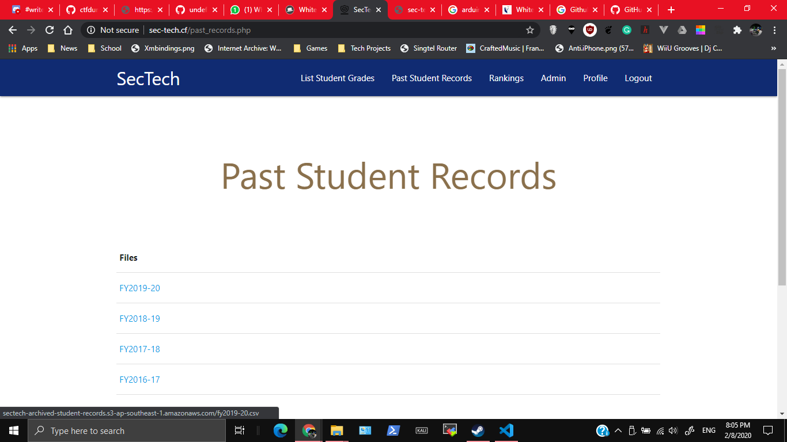
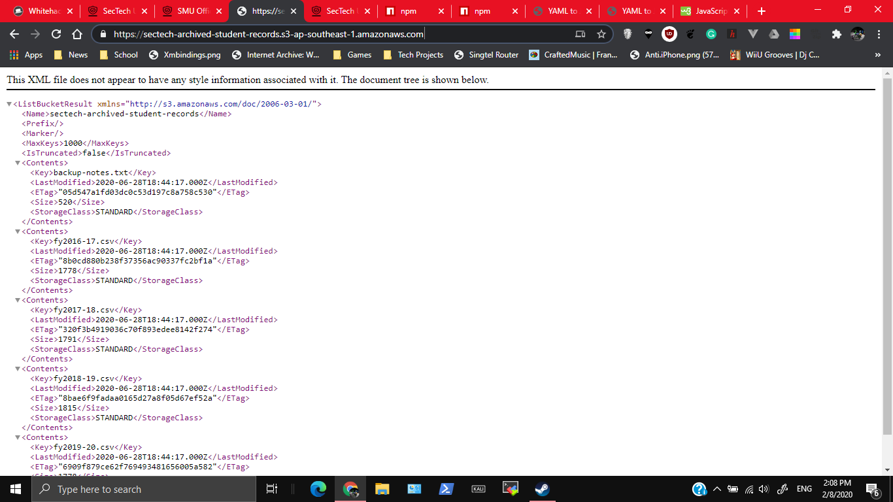
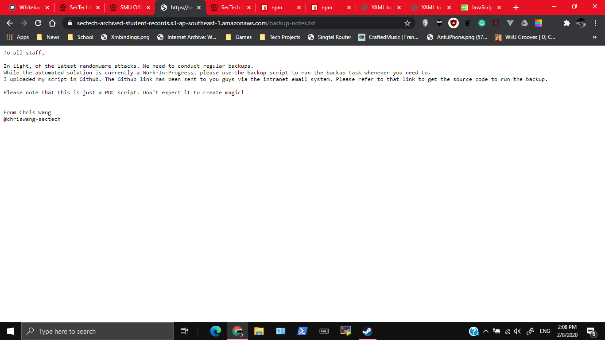
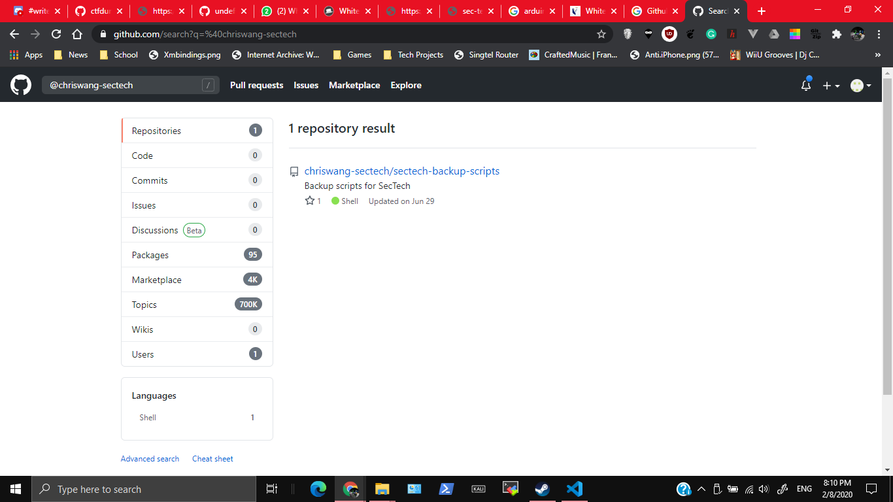
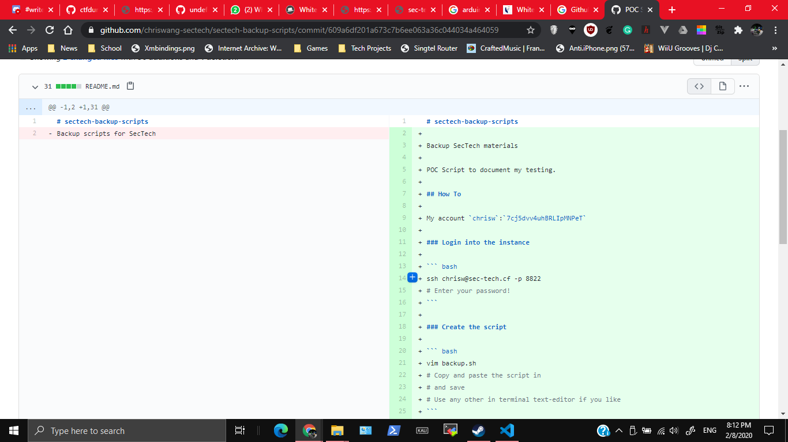
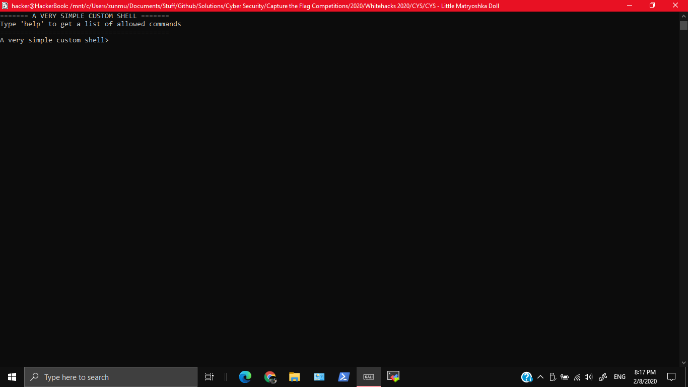
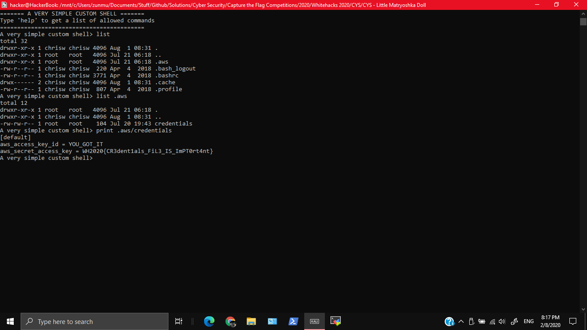

500, GOVTECH, 11 SOLVES
GovTech Sponsor Challenge
We love how the system archives past student records - after all, data is gold. If you don't find the gold, we suggest you dig deeper and look beyond the surface, specifically the 'root' :)
Login with the username temp_acc and password temp_pass
This is one of the challenges I'm most proud of doing, especially since the organisers ended up going through this challenge. I'll be talking about how I got this challenge
Firsly, when looking at the past student records, the URL of the links seemed interesting, linking to some AWS server.

I decided to go to the base URL https://sectech-archived-student-records.s3-ap-southeast-1.amazonaws.com/, and got these

Most of these are student records, but one interesting thing is the backup-notes.txt. On checking that by going to the URL https://sectech-archived-student-records.s3-ap-southeast-1.amazonaws.com/backup-notes.txt you get to find some interesting information

Now we know that the script is in github, the person is Chris Wang, and that he can be identified by @chriswang-sectech. Doing a quick search on Github, you get this

We know that the main repo is https://github.com/chriswang-sectech/sectech-backup-scripts. Looking to it at first glance, there is an SSH command of ssh chrisw@sec-tech.cf -p 8822. However, I guessed that it could be hidden in one of the commits. Looking through them, you get to find the username and password

With this important credentials we can SSH into the system using chrisw:7cj5dvv4uhBRLIpMNPeT. You get a simple command shell.

Originally I was stuck at this. list is just a simplified version of ls, print is a simplified version of cat and so on. On experimenting, I tried to do something like this to get a shell
print | bash
After that I realised that characters like >, | and more are eliminated.
And then, undefined-func reminded me that you can just list .aws and stuff.

WH2020{CR3dent1als_FiL3_IS_ImPT0rt4nt}